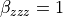

2.2. Get started¶
2.2.1. Goal and Perquisite:¶
This first tutorial is designed to help you run  with its most standard parameters.
with its most standard parameters.
Note
Note that you should read the Overview at the same time as you try this tutorial. This page present in concreate details what you should do to run while the Overview present the phylosophy of the code.
The file needed to run this tutorial are located at: Frog/Doc/Tutorial_files/Traj/Tuto_get_strated for the MD trajectory and Frog/Doc/Tutorial_files/Get_started_tuto for all the other documents. You should go in your shell to the Frog/Doc/Tutorial_files/Get_started_tuto directory, but you can also run everything in an other location.
Todo
Add the tutorial file in the module as well as the doc.
To install , see Installation.
First is presented how to built the parameter file, then how to run and understand
2.2.2. The Parameter file:¶
We explain here how to read and configure the parameter file, here named: parameters_example_get_started.py
First of all, let’s describe the structure of the parameter file. There are at least 3 “blocs”:
Header: Mandatory lines that initialised the important object of
Global Parameter (GP): The definition of the common parameter for this run. All the value relative to the Global Parameter should be initialised before the line: GP.MD_check_GP().
As many block as there are Molecule Type (MT). The MTs define what you want to do (which analysis) for a set of ‘molecules’. In this exemple, there is only the water MT, so one MT block. The MT definition starts with the line: moleculetype = MoleculeType(GP, molecule_type_name, where_are_molecules). It ends with:
moleculetype.end_initialize(GP) L_moleculetype.append(moleculetype)
2.2.2.1. Preliminary recommendation¶
In the parameter file, the “blocs” order must not be changed.
- have been designed to work with a constant number of molecule/atom of the MD. Moreover, the assignement given by the topology file should remain the same throughout all the trajectory. There is not safeguard regarding this in the code.
- is a delicate software that should not allow you to define in the parameter file not available attribute or incompatible parameter. If starts its run, it should go to the end without error – except if the MD trajectory behave badly though time. However, if you find a way to define incompatible set of parameters, please contact us.
The attribute name of the GP and MTs object cannot be changed: only the value. Note also that many parameters are optional and have default value if not initialized by the user.
We warmly recomand to define the localization of every file absolutely.
2.2.2.2. Header:¶
The very first lines of the file are:
import numpy as np
import os
from Frog.class_GP import GlobalParameter
from Frog.class_Molecule import MoleculeType
GP = GlobalParameter()
L_moleculetype = []
The first two imports are not needed in general: it is just module that are usefull for the next step. But you may not use them if you want.
The last 4 lines are mandatory. The 2 objects core object GlobalParameter (GP) and MoleculeType (MT) are imported. The GP object is initialized as well as the list containing all the MT object (L_moleculetype).
Warning
You shall use the name ‘GP’ and ‘L_moleculetype’.
The following lines of the parameter file defined first the GP, and then the MTs of your analysis.
2.2.2.3. Definition of Global Parameter (GP):¶
The complete list of the attribute available of the GP are available here.
First of all, the definition regarding the MD trajectory have to be provided using the attributes GlobalParameter.MD_file_name_topology, GlobalParameter.MD_file_name_traj and GlobalParameter.MD_file_type. In this exemple:
GP.MD_file_name_topology = '/home/fdupont/Software/Frog/Doc/Tutorial_files/Traj/Tuto_get_strated/system.data'
GP.MD_file_name_traj = '/home/fdupont/Software/Frog/Doc/Tutorial_files/Traj/Tuto_get_strated/traj_get_strated.dcd'
GP.MD_file_type = 'LAMMPS'
Since the parameter file is a python file, the usual command lines can be used to create the variable. For instance, the above lines are equivalent to::
path = '/home/fdupont/Software/Frog/Doc/Tutorial_files/Traj/Tuto_get_strated'
GP.MD_file_name_topology = os.path.join(path, 'system.data')
GP.MD_file_name_traj = os.path.join(path, 'traj_get_strated.dcd')
GP.MD_file_type = 'LAMMPS'
GP.MD_file_name_topology is the path to the topology file which will be used to define what atom are contain in a ‘molecule’: use the same assignment as the MD. GP.MD_file_name_traj is the path to the trajectory file. The GP.MD_file_type defines which type of tropology/trajectory couple are used. See here for more details.
Note
expects Angstrom unit. If your MD trajectory is written in another unit, use the parameter: GlobalParameter.MD_convertion_to_angstrom to convert.
Then, the number of time steps of the MD trajectory to treat is defined using GlobalParameter.nbr_time_step and GlobalParameter.trotter_step. Here:
GP.nbr_time_step = 10
GP.trotter_step = 4
The total number of time step treated will be 10, and every treated frame are separated by 3 frames – 1 frame over 4 will be treated. Here the frame number: 1, 5, 9, 13, 17, 21, 25, 29, 33 and 37.
Note
does not know what is the real time of the frames. It only refers to the time step.
To define where stores it files and results, use the directory management attribute of the GP. For this tutorial, you may use only one: GlobalParameter.general_path. In short, it defines the ‘main’ directory: the other files and directories will be contain in this one. If no other directory parameter are defined, the results are saved in the GP.general_path directory. The file used by to performed the analysis are stored by default in GP.general_path/Molecule_times, see GlobalParameter.dir_mol_times.
For this example, set the GP.general_path where the parameter file is:
GP.general_path = '/home/name/Software/Frog/Doc/Tutorial_files/Get_started_tuto'
To speed up the calculation, one can define the number of cores which will be used during the run to parallelize the analysis using GlobalParameter.nbr_parra:
GP.nbr_parra = 2
Here, FROG will try to use 2 cores: each core will treat 5 frames in this example.
Note
The parallelization is made over the time step treated, not space. Be aware that the RAM may become important, so do not overload your (personal) computer and try small GP.nbr_parra to start with. See this page for more informations.
Note
If you use parallelization, it is recommanded to cut the MD trajectory to not overload the RAM and for savety (of the MD trajectory file: otherwise it would be read by several core at the same time.). Set GlobalParameter.MD_cut_trajectory to True – default value.
Finally, once all the GP attribute you wanted to defined have been set, you have to call the function:
GP.MD_check_GP()
In order to end the GP definition. This function will check if the parameter make sens and intialize important varaible for the MT definitions.
Warning
After this line, some attribute will still evolve on the GP object but we strongly recommend to not define directly other GP’s attributes.
Now that we have define the GP attributes, let’s initialize all the MT object.
2.2.2.4. Definition of Molecule Type (MT)¶
The following procedure should be repeated for each new MT you would like to define. More information are available here for the MT creation and here for the diagram definition.
Initialization:
To define a Molecule Type (MT), you should first define its name and which molecule of the topology file is part of this definition.
This is done by defining an object, called moleculetype using the class MoleculeType:
molecule_type_name = 'Water_TIP4P2005'
where_are_molecules = 'all'
moleculetype = frog_class.MoleculeType(GP, molecule_type_name, where_are_molecules)
You can of course use similary:
moleculetype = frog_class.MoleculeType(GP, 'Water_TIP4P2005' , 'all')
The first argument is the previously defined GlobalParameter.
The second argument molecule_type_name indicates which type of molecule defines the MT. call the molecular library file associated in the frog library (in the folder Frog/Molecules). The value of molecule_type_name have to correspond to one file in the library. If not, you may have to create a new molecular module.
Note
the molecular library file in our example will be the file Water_TIP4P2005.py. It contains some key functions: for example, how to compute ‘mean position of the molecule’ or the ‘molecular orientation’. These function will be used in Frog to deal with each MT.
Note
Do not hesitate to send your own molecular library file for a new molecule or an update to an existing one: they are backbones of .
The third argument, where_are_molecules, indicates that all molecules of the MD trajectory should be described by this ‘Water_TIP4P2005’ MT. If you have several species in the MD, you have to specify here which one are of part of this MT, see here.
Finally, the line moleculetype = frog_class.MoleculeType(GP, molecule_type_name, where_are_molecules) defines the object moleculetype using the class Frog.class_Molecule.MoleculeType.
Note
You can call the MT object ‘moleculetype’ otherwise. This important point is that is have to be added to the L_moleculetype list once defined.
Diagram initialization:
Once the MT is defined, you can add the analysis to perform. To distinguish between the procedure where QM simulation are required from others, some analysis are called structural (without QM) and some optical (where QM calculation may be needed).
For the structural analysis, a typical example of request is:
arg1 = ['density', 'Plane_xy', 100]
arg2 = ['molecular_orientation', 'Plane_xy', [100, 100], 'independent']
L_diagram_analysis_to_perform=[arg1, arg2]
moleculetype.read_diagram_input(GP,L_diagram_analysis_to_perform)
arg1 (resp. arg2) contains parameter to define the first diagram (resp. second). Here, we would like to have the density and the molecular orientation in the laboratory frame. The generated diagram will be called density_slice_z and molecular_orientation_slice_z. They contains the full distribution and the mean value of these observable with respect to the laboratory z-axis. For more information, see this page for the diagram creation, this one for the geometrical discretization available and this tutorial for more example for geometrical discretization.
For an optical analysis, you can compute the first hyperpolarizability in the laboratory frame (chi tensor) using:
arg3 = ['chi', 'Plane_xy', [100, 50], [-10, 10]]
L_diagram_analysis_to_perform=[arg1, arg2, arg3]
moleculetype.read_diagram_input(GP,L_diagram_analysis_to_perform)
For more information about the available optical analysis, see this page and this one. Thus, this analysis required both the individual value of the hyperpolarizability in the molecular frame (noted beta) and the orientation of the molecule. The orientation is given by the MD trajectory along with the compute_rotational_matrix function defined in the molecular library file relative to the MT. In this example, the hyperpolarizability is assumed to be a constant for every molecule of this MT. However, if you want to compute it using electrostatic emebbeded QM scheme (it is more or less the initial goal of !), see this tutorial. But for this first tutorial, let’s use a constant beta:
my_beta_ref = np.zeros((3, 3, 3))
my_beta_ref[2][2][2] = 1
moleculetype.read_optic_properties_input(GP, beta_calculation_style='fixed_for_all', L_beta_ref=my_beta_ref)
The molecular hyperpolarizability (‘my_beta_ref’) defined here only affect the MT you are defining. You can assigned as many reference molecular hyperpolarizability as MT defined. Here, the molecular hyperpolarizability is set to zero except for one component , for all the molecule assigned to this MT.
Warning
Enven if no optical analysis are defined, you necessary have to call the line: moleculetype.read_optic_properties_input(GP)
Note
In this case, no QM calculation will be performed since no optical analysis needs to be obtained at the QM level.
End the MT definition:
When all the previous steps have been made, the MT parameters shall be checked using:
moleculetype.end_initialize(GP)
This step is designed to avoid incompatible parameters/request for this MT and to update some information to the GP.
Note
At this step, can stop and print error messages to explain why. This checking is not perfect and other crashes may happen later on. If you have any recommendation to help improving this safeguard do not hesitate!
Filling the list of MT.
The MT can then be safely added to the list of molecule types:
L_moleculetype.append(moleculetype)
This procedure should be repeated for every MT you want to declare.
Note
The list name L_moleculetype is mandatory for FROG. You shall add every MT defined in this list. The order does not matter.
Note
An MT per ‘real’ chemical species in your MD can be created but not only. For example, we can create two MT for two sets of the same chemical species (for instance water molecules) to define different analysis for each set of molecules . See here for more details. The only thing that is request is that every molecule present of the MD trajectory are assigned to exactly one MT.
2.2.3. Run Frog:¶
Once all this file configured, the request are fixed. You can now launch !
is a Python3 software, if you have followed the installation procedure here, it should be available as a package directly from your shell. In the shell, write:
$ Frog parameters_example_get_started.py
The software takes as argument the python file used to defined the parameters, here named parameters_example_get_started.py. You can use a different name for this file.
During the run, many messages will be print to help you check what is going on. If an error occured, messages to help you understand the problem should be printed. For advance user, a log file is also generated in the same directory as the input parameter file. Its default name is ‘frog_log.txt’. If you want to change the name, use:
$ Frog parameters_example_get_started.py --log_file the_log_file_name.txt
The last message printed message should be ‘FROG run finished without error!’
If you want to save what print (in top of what is stored in the lof file), you can use:
$ Frog parameters_example_get_started.py > frog_output.txt
Nothing will be printed in the shell, and all the output are stored in the file frog_output.txt.
To analyze your result, see this tutorial and the jupyter notebook present in the tutorial directory: get_started_analysis.ipynb .